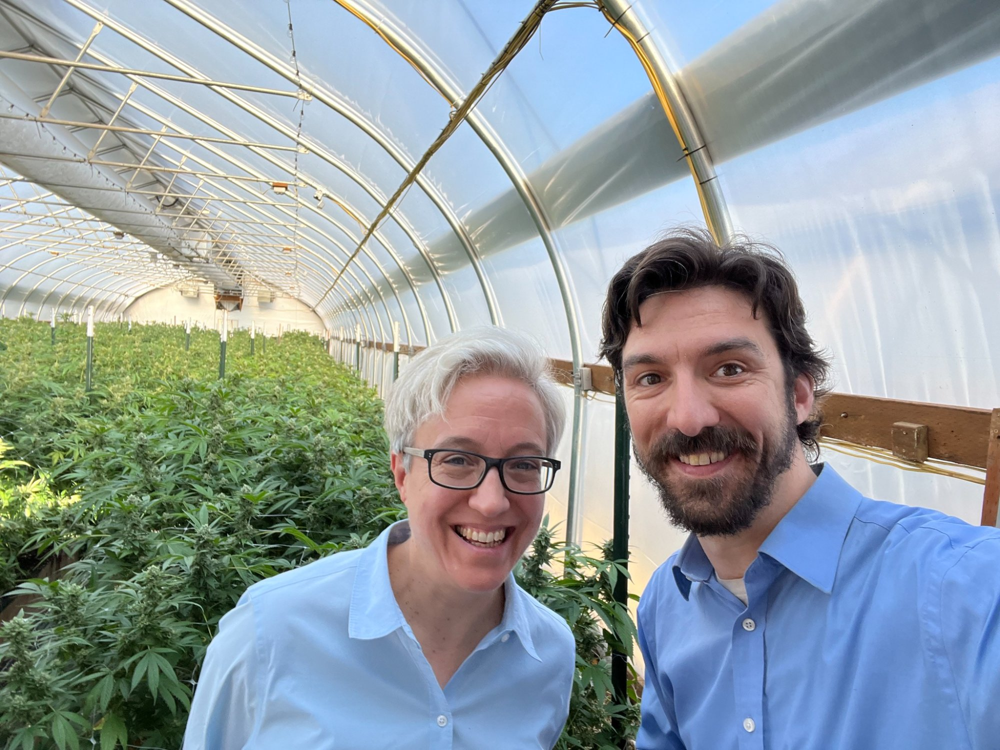

Who We Are
ACCA exists because when Oregon's SB 1548 was moving through the legislature, there was no organized consumer voice in the room. We're changing that — starting in Oregon and Hawai'i, and building toward something national.
In 2025, Oregon Senate Bill 1548 came within a few votes of becoming law. The bill would have required individual wrapping for every cannabis edible unit and capped each unit at 10mg THC — changes framed as child safety measures, but unsupported by Oregon's own Poison Center data, peer-reviewed pharmacology, or evidence on packaging effectiveness.
Industry groups pushed back. But the most credible voice in that fight wasn't industry — it was consumers with no financial stake in the outcome, armed with facts, showing up at hearings and flooding legislative inboxes. The bill was defeated.
That experience made one thing clear: cannabis consumers need a permanent, organized, non-industry voice in every legislative session — not just when a crisis bill is already moving. The American Cannabis Consumer Alliance was built to be that voice.
We are not a trade association. We don't represent growers, processors, or retailers. We represent the 64 million Americans who used cannabis legally last year and deserve policy that treats them like adults.
How we got here
California, then Oregon, legalize medical cannabis. A regulated market is born — with no organized consumer voice to shape it from the start.
Colorado and Washington become the first states to legalize adult-use cannabis. Sixty-four million legal consumers exist — still unorganized, still unrepresented in policy debates.
MCBA publishes the first National Cannabis Equity Report, establishing that the war on drugs fell hardest on communities of color — and that any legalization framework must address that harm.
Pew Research confirms supermajority support for legal cannabis. Yet restrictive bills keep advancing in state legislatures, pushed by a handful of voices with no organized consumer pushback.
A consumer-led, evidence-based campaign defeats SB 1548 in the Oregon House. Proof that organized consumers can win. Problem: no permanent org exists to hold that ground between sessions.
The American Cannabis Consumer Alliance launches to fill that gap — building the list, the research library, and the infrastructure before the next session arrives.
What We Stand For
We represent cannabis consumers — not the businesses that sell to them. Our positions are determined by what is good for the people who use cannabis legally and responsibly, full stop.
Every position we take is backed by peer-reviewed science, government data, or primary source reporting. We don't argue from ideology — we argue from facts. When the facts change, we change with them.
We believe the licensed, regulated cannabis market is safer for consumers, safer for communities, and better for public health than prohibition or the unregulated market. We defend and improve regulation — we don't oppose it.
Cannabis prohibition fell hardest on communities of color. Any cannabis policy framework that doesn't center equity and address those harms is incomplete. ACCA brings that lens to every legislative fight.
We are transparent about who funds us, what we spend money on, and what positions we hold. Consumers deserve to know who is speaking in their name — and why.
Good policy advocacy requires presence — in hearing rooms, at community meetings, in the inbox of every legislator considering a bill that affects consumers. We don't just publish reports. We show up.
Leadership
Kaliko Castille has spent more than a decade at the intersection of cannabis policy, community organizing, and political strategy. He served as Director of Marketing at the National Cannabis Industry Association (NCIA) and as Board President of the Minority Cannabis Business Association (MCBA), where he led the creation of MCBA's National Cannabis Equity Report and helped develop model legalization policies for state legislatures. His federal policy work included direct lobbying for equitable cannabis reform.
He currently serves as Political Director at APANO Action Fund and founded ACCA after the 2025 SB 1548 fight made clear that consumers needed a permanent, non-industry voice in Salem — and in every state where bad cannabis policy is being made. His work has been featured in MSNBC, Forbes, Bloomberg, Rolling Stone, The Washington Post, The Hill, and Cheddar. He was named to MJ Venture's 40 Under 40.
Governance
ACCA is in the process of establishing its formal board of directors. We are actively recruiting community leaders, policy experts, and consumer advocates who share our commitment to evidence-based cannabis policy reform.
Board Members

Casey has been shaping Oregon cannabis policy since 2013, when HB 3460 created the state's first licensed medical dispensary system and the work of turning legalization into functioning law began in earnest. A political organizer by training — with experience on candidate campaigns and as legislative staff — he built ORCA from the ground up into a 500-member organization that became one of the most effective cannabis trade associations in the country.
His decade-plus of work in the Oregon Legislature — testifying, lobbying, and negotiating the rules that govern the regulated market — gives him a ground-level understanding of how cannabis bills move and where consumer interests get lost between industry and regulators. He's argued in Salem on the record: excessive regulation and punitive taxation don't protect consumers, they drive them toward the unregulated market.
Anthony Johnson is one of the most consequential drug policy reformers in Oregon history. A former criminal defense attorney, he served as Chief Petitioner, co-author, and primary spokesperson for both Measure 91 — which legalized adult-use cannabis in Oregon in 2014 — and Measure 110, which made Oregon the first state in the nation to decriminalize personal possession of all drugs in 2020. Both campaigns passed with majority support.
As Director of New Approach Oregon, Anthony has spent years fighting for sensible implementation of the laws he helped create — at the legislature, before regulatory bodies, and at city councils and county commissions across the state. He brings to ACCA's board a rare combination: the credibility of someone who actually changed the law, and the tenacity of an advocate who has stayed in the room long after the victory to make sure it holds.
Board Forming — Join Us
A medical professional or public health researcher who can anchor our science-based approach and engage credibly with health-focused opposition.
Someone with grassroots organizing experience who can help build the rapid response network that activates when legislation moves.
A Hawai'i-based community leader who can help establish ACCA's presence and build the consumer list ahead of the next state session.
A legal or financial professional to support ACCA's organizational development as we build out the c3/c4/PAC structure.
A consumer advocate — not a professional — who represents the everyday people ACCA exists to serve and can keep us grounded in that mission.
We're building something new. If you have expertise in policy, public health, law, organizing, or community advocacy — and you believe consumers deserve a real seat at the table — we want to hear from you. Board service is volunteer-based and Oregon or Hawai'i connection is preferred but not required.
Transparency
Industry can sponsor events. Industry cannot set our positions. Our policy stances are determined by consumer interests and evidence — period.
Once formally established, ACCA will publish annual financial disclosures so members know exactly how their contributions are used.
We will never sell, rent, or share your personal information with third parties — including industry partners or sponsors.
Every bill we support or oppose, every testimony we submit, and every statement we make will be publicly posted on this site.